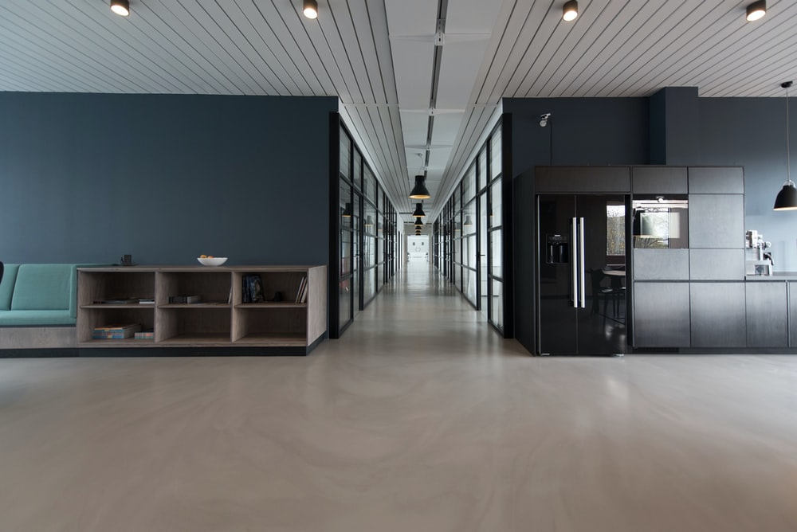

About

ゆっくりと時間が流れる落ち着いた空間.
ご家族ご友人まで幅広くご利用いただける「Natural Dining Café」
会社概要
| 「Natural Dining Café」東京駅前店 | ||
|---|---|---|
| 所在地 | 〒333-3345 | 東京都中央区青橋本町225-222第一ビル１F |
| 電話番号 | 03-555-7788 | |
| 営業時間 | 月・火・木・金 | 午前11時30分～午後10時 |
| 土・日・祝 | 午前11時30分～午後２時 | |
| 休日 | 水曜 | |
| 代表取締役 | 田中丸太郎 | |
| 事業内容 | 飲食店 体に優しい自然食を提供 |
|
原産地表示
| 主要原材料名 | 産地名 | |
|---|---|---|
| 米 | 新潟 | 国産食品 |
| 佐賀 | ||
| イカ | 佐賀 | 国産食品 |
| アサリ | 千葉 | 国産食品 |
| 愛知 | ||
| 中国 | 輸入食品 | |
| 牛肉 | 熊本 | 国産食品 |
| 北海道 | ||
| 豪州 | 輸入食品 | |
| 豚肉 | 群馬 | 国産食品 |
| スペイン | 輸入食品 | |
| タイ | ||
| 鶏肉 | 秋田 | 国産食品 |
| タイ | 輸入食品 | |
| アスパラガス | 長野 | 国産食品 |
| カリフラワー | 茨城 | |
| なす | 群馬 | |